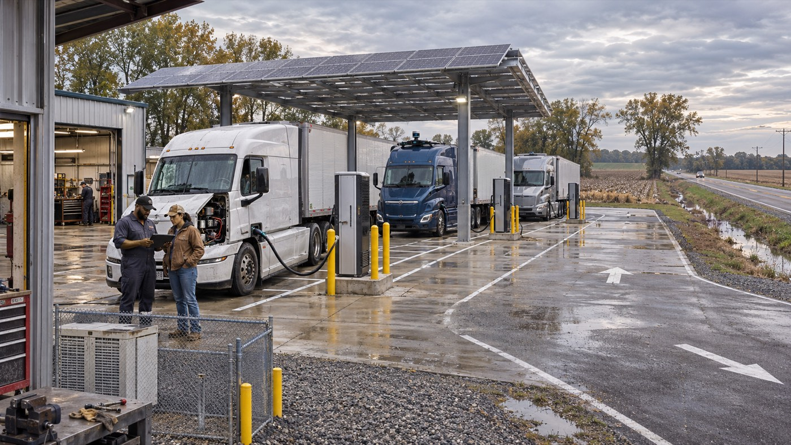

A
Energy Workforce
- During the build
- Introductory training, safety credentials and paid placements into solar, electrical, battery and equipment work, then registered apprenticeships where they exist.
- Measure
- County residents hired, and still in the trade 12 months after their placement ends.
- Skills that stay in the county after the build.
What Phase 1 confirms
- To size first
- The contractor’s hiring plan by trade; how many paid placements it will commit; approved training partners.
- Partners
- The EPC contractor, Entergy, Arkansas Advanced Energy Foundation, Southeast Arkansas College, the local workforce center.